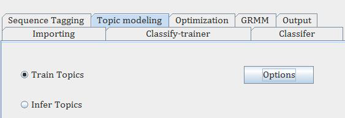
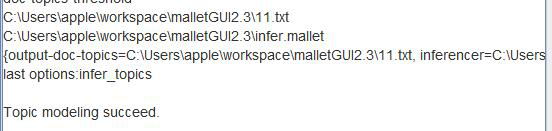

Build the topic model
The first step is to import data and turn it into unique mallet format (.mallet), which is the same as the above. However, in order to build a topic model, one option ‘Keep sequence’ must be true.
Then in ‘Input Path’, the unique mallet format file should be input.
Select ‘Train Topics’ to build the topic model, and then click the button ‘Options’ to complete the output, such as output-state, output-doc-topics, inference-filename and etc.
The output can be seen.
Model inference
Predict the unknown text topics through the established model. The unknown text should be in the unique mallet format. Select ‘Infer Topics’ to implement model inference and then click the button ‘Options’ to complete the output including selecting which model to be used to predict the text.
The output can be seen.
